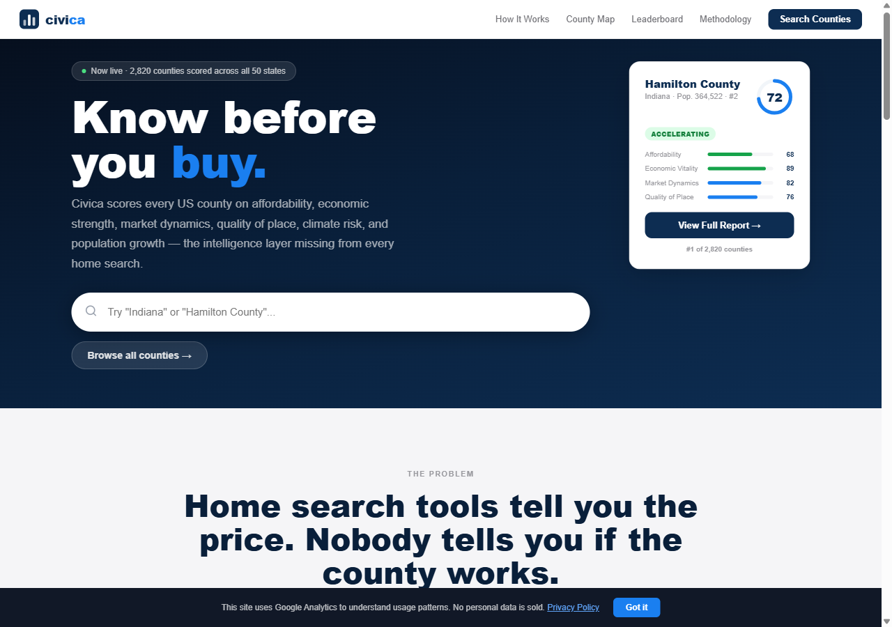
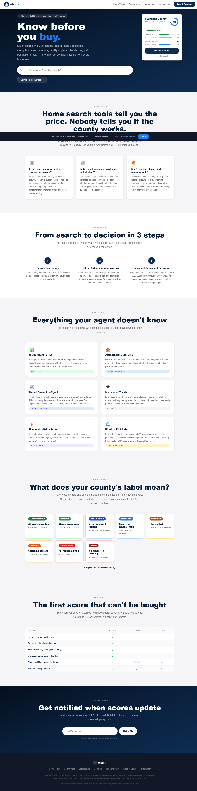
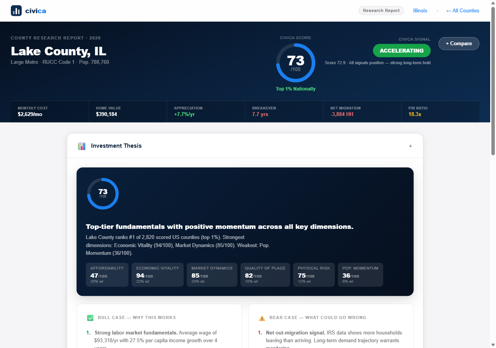
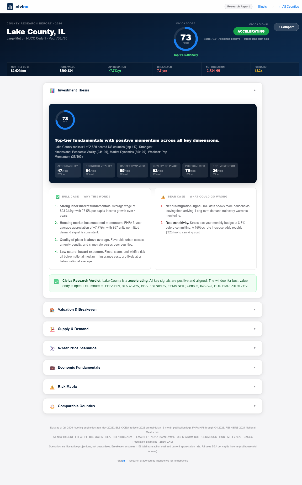
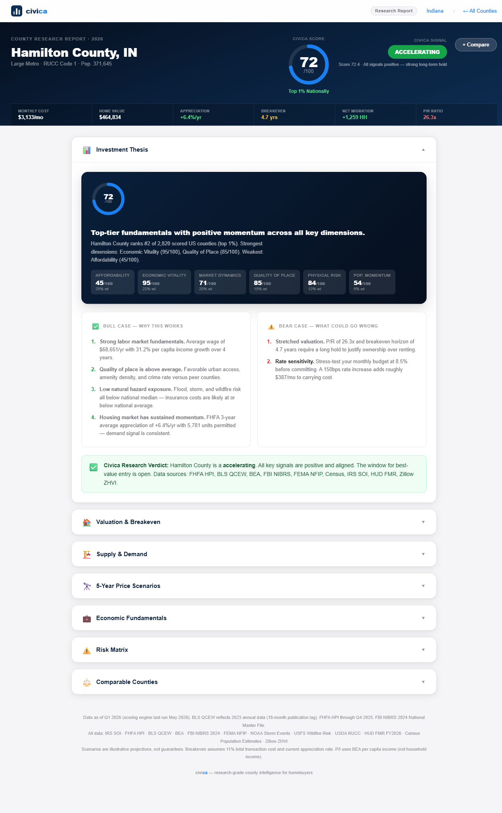
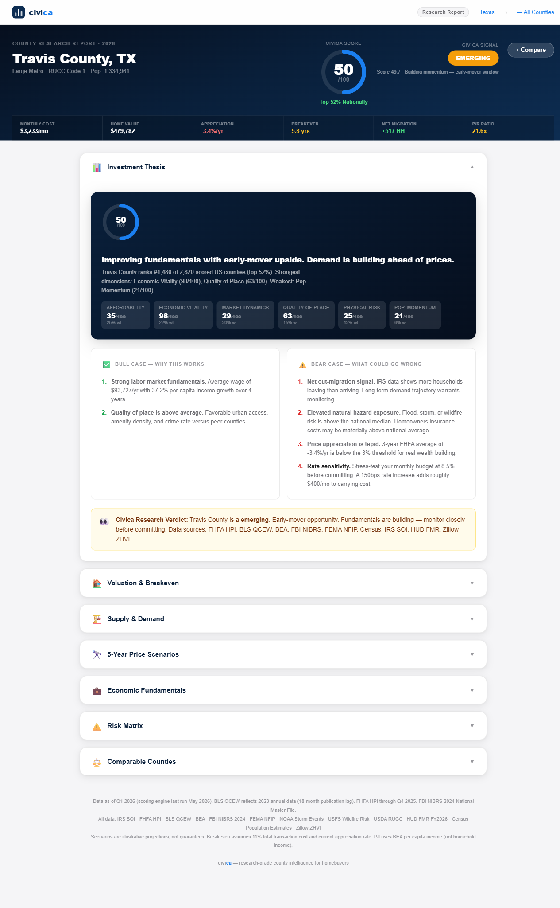
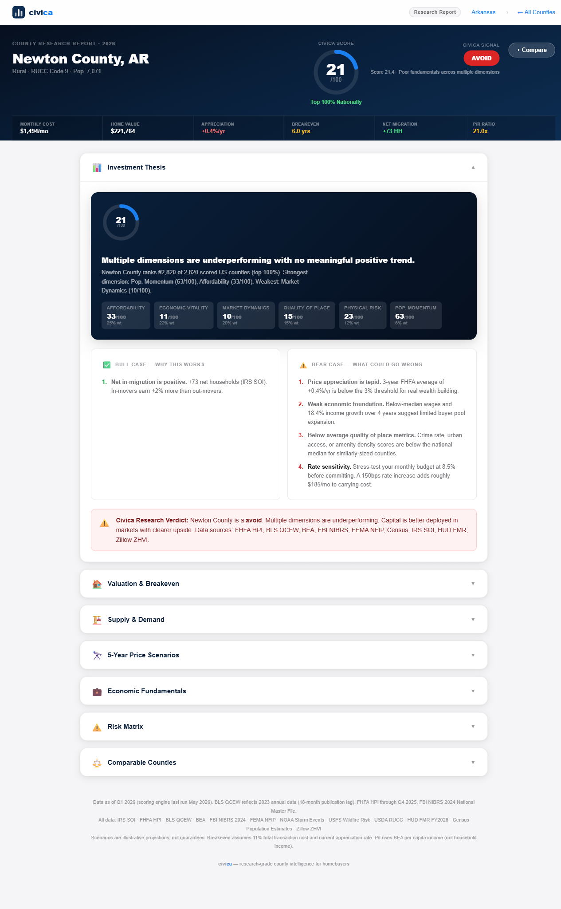
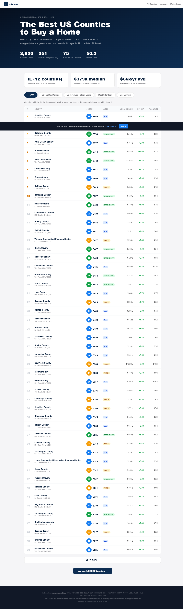
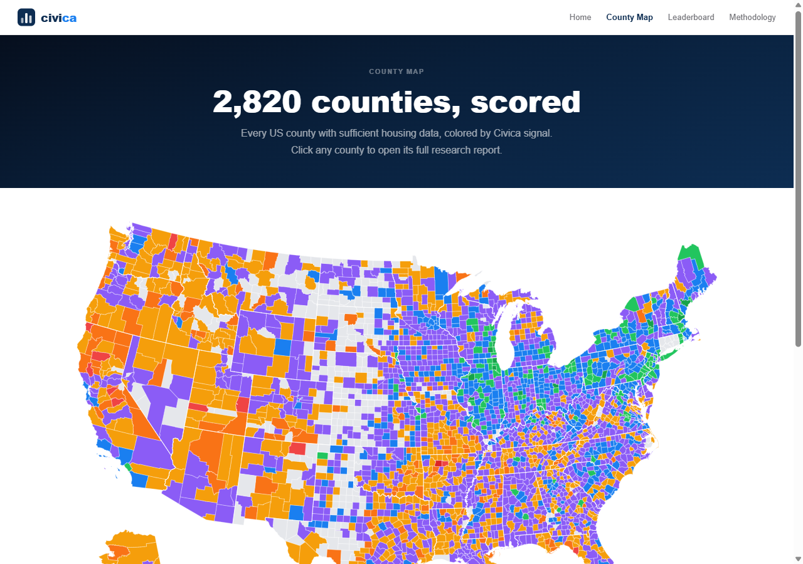

| Dataset | Agency | Used For | Coverage |
|---|---|---|---|
| Zillow ZHVI | Zillow (only non-federal source) | Dim 1: median home value, P/R ratio; Dim 3: active inventory count | ~2,900 counties, monthly |
| FHFA House Price Index | Federal Housing Finance Agency | Dim 1: appreciation quality; Dim 3: 3-yr trend + current momentum | ~2,800 counties, quarterly |
| HUD Fair Market Rents FY2026 | Dept. of Housing & Urban Development | Dim 1: rent baseline for P/R ratio and buy-vs-rent breakeven | All US counties, annual |
| BEA CAINC1 (Local Area Income) | Bureau of Economic Analysis | Dim 1: price-to-income ratio; Dim 2: 4-year income growth rate | All US counties, annual |
| BLS QCEW (Quarterly Census of Employment & Wages) | Bureau of Labor Statistics | Dim 2: avg annual wage, sector quality score, HHI diversification index | All US counties, annual |
| Census Building Permits Survey | US Census Bureau | Dim 3: new housing supply pipeline (units permitted 2022) | All US counties, annual |
| Census County Business Patterns | US Census Bureau | Dim 4: amenity density (private establishments per 1,000 residents) | All US counties, annual |
| USDA Rural-Urban Continuum Codes | USDA Economic Research Service | Dim 4: urban access score (1 = large metro, 9 = most rural) | All US counties, every 5-10 yrs |
| FBI NIBRS 2024 National Master File | Federal Bureau of Investigation | Dim 4: violent crime rate per 100k residents (UCR Part 1 offenses only) | 21,068 agencies, 49 states, 2,869 counties |
| FEMA NFIP Flood Insurance Claims | Federal Emergency Management Agency | Dim 5: paid flood claims per capita, 10-year window | All insured counties |
| NOAA Storm Events Database | National Oceanic & Atmospheric Administration | Dim 5: property damage per capita from storm events, 5-year window | All US counties, 2019–2023 |
| USFS Wildfire Risk to Communities | US Forest Service | Dim 5: wildfire national risk rank (exposure index) | All US counties |
| Census Population Estimates 2025 | US Census Bureau | Base county universe, migration rate denominators, per-capita calculations | All US counties, annual |
| IRS Statistics of Income — Migration Data | Internal Revenue Service | Dim 6: net migration rate (via Census); in-mover income quality ratio (AGI basis) | All US counties, 2022-23 |
| County | Score | Label | Home Value | Appreciation | P/R Ratio | Avg Wage | Net Migration |
|---|---|---|---|---|---|---|---|
| Lake County, IL | 72.9 | ACCELERATING | $390,184 | +7.7% | 18.3x | $93,318 | -3,884 HH |
| Hamilton County, IN | 69.5 | ACCELERATING | $464,834 | +6.4% | 26.3x | $68,651 | +1,259 HH |
| Travis County, TX | 49.0 | EMERGING | $479,782 | -3.4% | 21.6x | $93,727 | +517 HH |
| Newton County, AR | 21.4 | AVOID | $221,764 | +0.4% | 21.0x | Low | +73 HH |